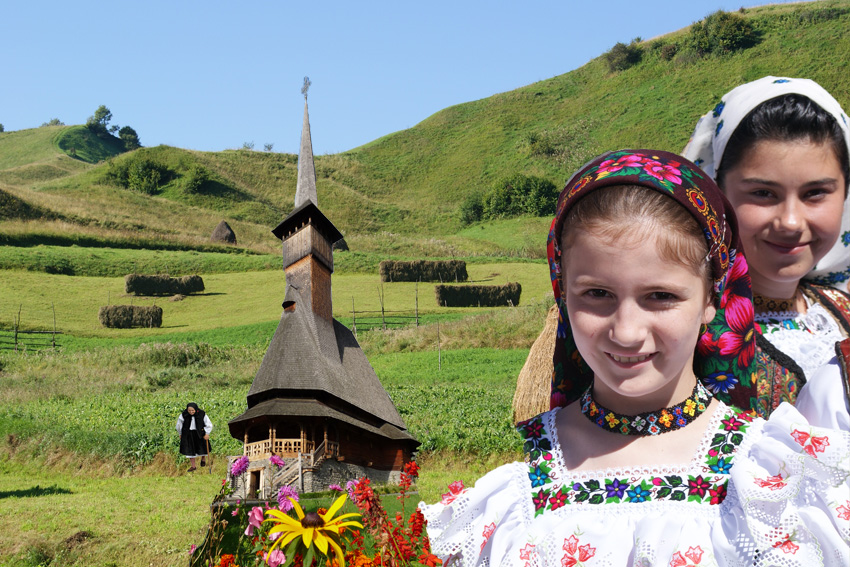
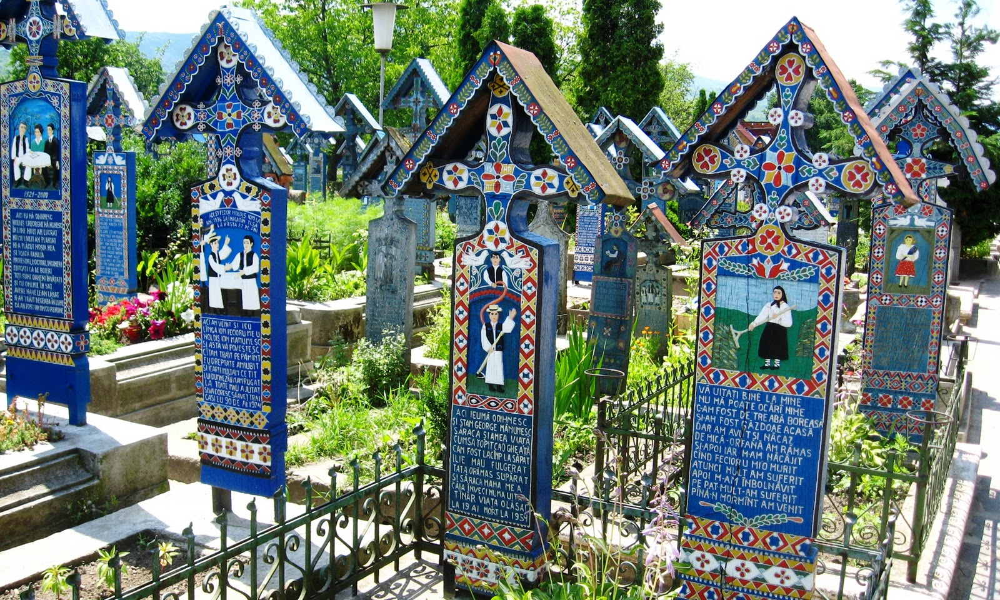
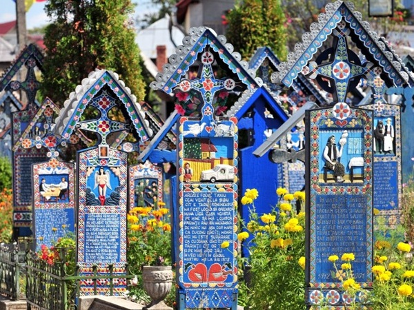
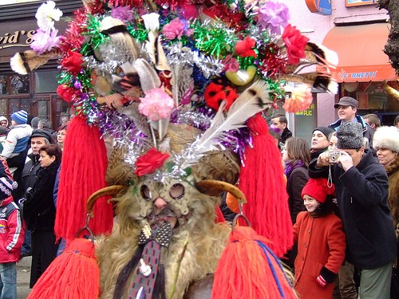

Maramureşul este considerat de mulţi sufletul satului tipic românesc. Cu aşezările sale pitoreşti, dealuri înverzite si câmpii pline de flori sălbatice, Maramureşul concentrează  tot ceea ce înseamnă viaţa la ţară. Vizitatorii acestor meleaguri au ocazia unică de a se întoarce în timp, de a fi martori ai unor vremuri si ai unei vieţi mai simple.
O alta asemenea excursie se poate face la Sapanta, localitate faimoasa datorita "cimitirului vesel", ale carui monumente funerare cioplite, alaturi de epitafurile umoristice, contituie o celebrare a mortilor.
 Festivalul din decembrie are loc la Sighetu Marmatiei, iar in cadrul lui au loc parazi costumate. Puteti vedea acolo interesante masti reprezentand animale.
